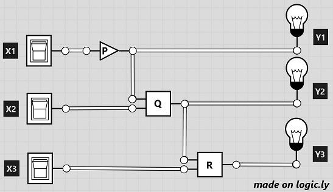

Logic Circuit
Spring 2019: Question 22 (use C language to make this program)
Spring 2017: Question 23 (use C language to make this program)
Given a logic circuit as shown, make a program to simulate the circuit.

Input for this circuit is X1, X2, and X3, while the output is Y1, Y2, and Y3.
Gate P can either be a NOT gate or nothing; and the output of Gate P fans out to Y1 and one of the inputs to Gate Q.
Gate Q can either be an AND or OR gate; and the output of Gate Q fans out to Y2 and one of the inputs to Gate R.
Gate R can either be an AND or OR gate; and the output of Gate R fans out to Y3.
You are required to use the following code to make your program:
|
#include<stdio.h> #include<stdlib.h> #define GATEVALUE(TYPE) int(*GateValue)(void) typedef struct _Gate{ GATEVALUE(); }Gate; int GateGetValue(){return 0;} typedef struct _GateAnd{ GATEVALUE(); }GateAnd; int GateAndValue(){return 1;} void CreateGate(Gate *obj){ obj->GateValue = GateGetValue; } void CreateGateAND(GateAnd *obj){ obj->GateValue = GateAndValue; } int main(int argc, char *argv[]){ Gate gate; CreateGate(&gate); GateAnd and; CreateGateAND(&and); printf("Gate = %d, GateAND = %d\n", gate.GateValue(), and.GateValue()); return 0; } |
Input instruction: Input two lines.
- First, the values of X1, X2, and X3 (0 or 1), separated with a comma.
- Then, define the gates for P, Q, and R -- E for no gate, A for AND gate, O for OR gate, and N for NOT gate.
Output instruction: Output the values of Y1, Y2, and Y3, separated with a comma.
| Sample Input | Expected Output |
|---|---|
|
0,1,0 N,A,O |
1,1,1 |